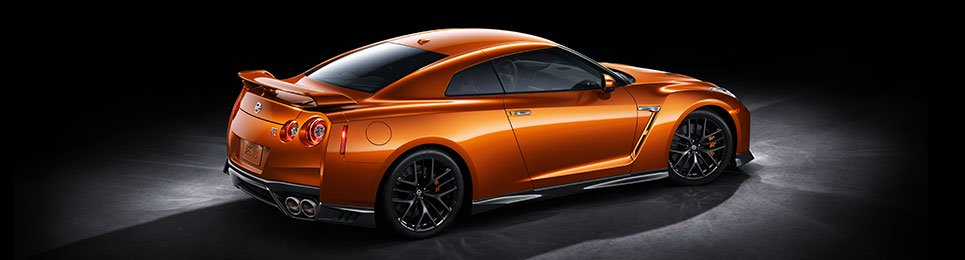
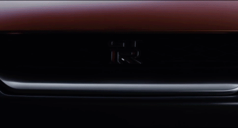
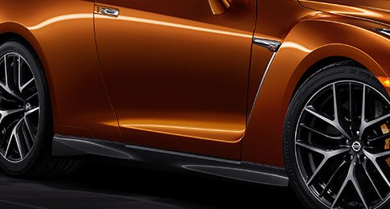
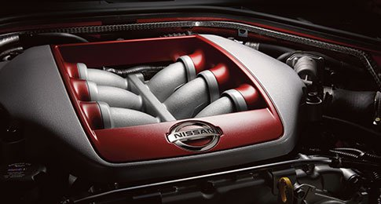
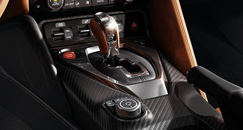

Además de proporcionarle un estilo más definido e imponente, el renovado diseño de Nissan GT-R no sólo está pensado para atraer todas las miradas. Cada cambio en el exterior está hecho para mejorar el desempeño aerodinámico del auto. La finalidad es que al conducirlo experimentes la adrenalina en todo recorrido.

ENFRENTA EL CAMINO CON DECISIÓN
Con una actitud que desafía cada kilómetro, nada te impedirá seguir avanzando.
La parrilla V-Motion ha sido agrandada para proveer un mejor enfriamiento
al motor sin generar resistencia adicional. Mientras que el rediseño del
cofre, en conjunto con el bumper delantero, realza el frente del vehículo
para ayudar a reducir la deformación e incrementar su desempeño al conducir
en altas velocidades. Asimismo, las Luces de Funcionamiento Diurno (DRL)
y los acabados mate en cromo, le otorgan un aspecto más agresivo y sofisticado.
DOBLEGA EL VIENTO A SU PASO
Cuando se trata de competir, también se requiere el más alto control.
Por esta razón, la parte inferior de las molduras en las puertas fue
rediseñada para brindar una mayor estabilidad, disminuyendo la cantidad
de aire que el vehículo empuja hacia abajo y contrarrestando con ello
la elevación del mismo. De igual forma, la parte superior de los
pilares en C, fue redefinida para mejorar la distribución del aire
y reducir la turbulencia.

PREPARADO PARA DEJARLOS ATRÁS
La parte posterior de este vehículo incorpora un nuevo difusor con acabados plateados y rejillas de ventilación a los costados, cerca de los tubos de escape de titanio. Éstas mejoran su desempeño aerodinámico y, junto a sus icónicas luces traseras en forma de aro, harán que aquellos que rebasas vean algo más que el polvo.
Cuando tienes clara cuál es la meta, no importa lo que otros digan sino lo que eres capaz de hacer. Nos propusimos crear el superdeportivo de más alto rendimiento en nuestra historia, el resultado es Nissan GT-R.
ENFRENTA EL CAMINO CON DECISIÓN
Con una actitud que desafía cada kilómetro, nada te impedirá seguir avanzando.
La parrilla V-Motion ha sido agrandada para proveer un mejor enfriamiento
al motor sin generar resistencia adicional. Mientras que el rediseño del
cofre, en conjunto con el bumper delantero, realza el frente del vehículo
para ayudar a reducir la deformación e incrementar su desempeño al conducir
en altas velocidades. Asimismo, las Luces de Funcionamiento Diurno (DRL)
y los acabados mate en cromo, le otorgan un aspecto más agresivo y sofisticado.
DOBLEGA EL VIENTO A SU PASO
Cuando se trata de competir, también se requiere el más alto control.
Por esta razón, la parte inferior de las molduras en las puertas fue
rediseñada para brindar una mayor estabilidad, disminuyendo la cantidad
de aire que el vehículo empuja hacia abajo y contrarrestando con ello
la elevación del mismo. De igual forma, la parte superior de los
pilares en C, fue redefinida para mejorar la distribución del aire
y reducir la turbulencia.
